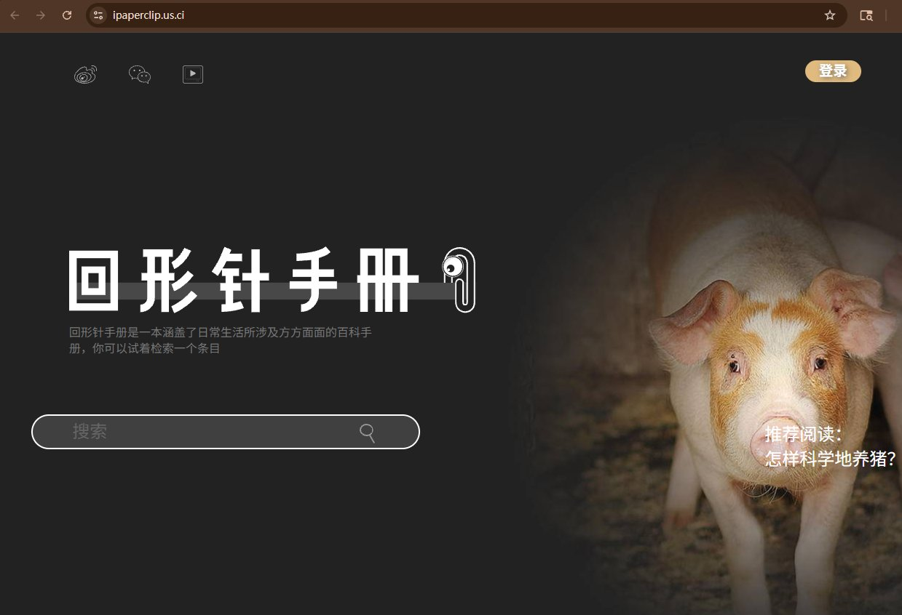

好奇猫a
@acnekot
@realNyarime 回形针的视频是真好看，感觉有点可惜

奶昔🥤
@realNyarime
吴松磊和他的回形针团队回来啦？
今天看到回形针手册“iPaperClip”又重新上线，域名是ipaperclip[.]us[.]ci，仿佛又回到5年前
除了百科知识外，其他微博、哔哩哔哩都销声匿迹了。似乎当年的账号都被永封了，甚至YouTube账号也无限期停更。
之前回形针没做起来生活手册也挺可惜的，虽然是自己屁股歪作的 https://t.co/srul8oyJYu